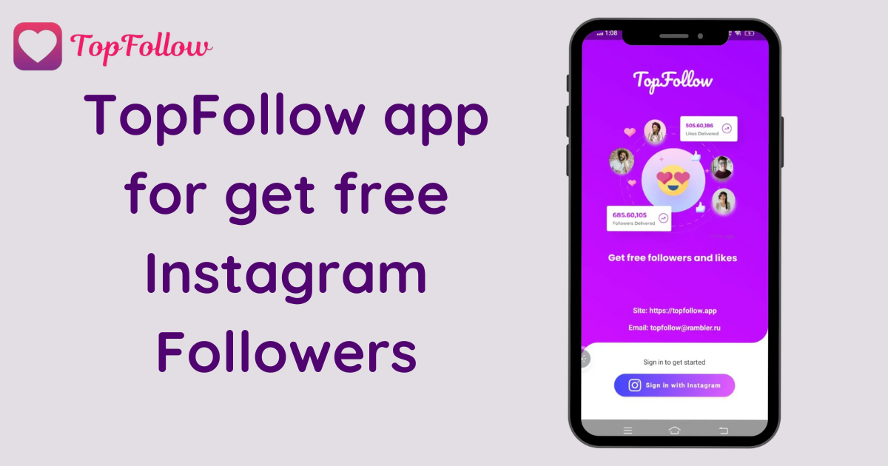

If you've ever scrolled through Instagram and wondered how some people seem to have thousands of followers overnight, then you've likely heard of apps like TopFollow. It’s like the secret sauce for Instagram growth, but unlike those sketchy bots that leave random comments on your posts like, “Nice picture, wanna be friends?” TopFollow aims to give you real followers—actual human beings who will engage with your content. That means more likes, more comments, and more people watching your Instagram stories. Sounds like a dream, right?
Well, let me introduce you to the wonders of TopFollow APK and explain why this app is such a game changer if you're serious about growing your Instagram following—whether you're using Android, iOS, or even PC.
To put it simply, TopFollow is an app designed to help you gain Instagram followers fast—like "blink and you'll miss it" fast. The app promises you can get thousands of followers in just 4 to 5 days, which, let's be honest, is an incredible feat for anyone who’s been struggling to gain followers by manually liking and commenting on other accounts.
You’re not just getting bots that inflate your numbers; TopFollow is all about real followers. These are genuine Instagram users who are likely to like your photos, comment on them, and maybe even slide into your DMs if you post something particularly captivating. Yes, real people—who’d have thought?
Here’s where it gets interesting. Unlike many follower apps that just throw fake accounts at you, TopFollow uses a coin-based system to bring in real users. Basically, you earn coins in the app, and then you use those coins to "buy" followers. But don’t worry; you don’t have to sit there manually raking in coins like you’re playing Candy Crush. You can earn them through some simple tasks within the app, like following other Instagram accounts or liking posts.
It’s kind of like a community where everyone helps each other grow. You follow people to earn coins, and then other people follow you back when you spend those coins. It’s a bit like a digital swap meet but with way less awkward small talk.
TopFollow is most famous as an Android app, and the APK version is where most users first get hooked. APKs are like the secret backdoor to downloading apps without needing the official app store. Perfect if you're the type of person who likes skipping the lines and getting things done faster. You just download the APK from a trusted site, install it, and you’re good to go.
Installing it is pretty straightforward, and once you’re in, you'll start gaining followers faster than your grandma can figure out how to turn off Instagram’s notifications. The Android version of TopFollow works seamlessly, and the app is constantly updated to ensure the fastest and easiest ways to gain Instagram followers.
If you’re an iOS user, you might feel a bit left out at this point. Don’t worry; TopFollow has got you covered too. While iOS can be a little trickier with third-party apps (thanks, Apple), there are ways to get TopFollow on your iPhone. Sure, it might take a bit more finesse than the Android version, but hey, good things come to those who wait, right?
Now, let’s talk about the folks who prefer their big-screen devices. Maybe you’re more of a "let’s get this done on a real computer" type of person. Don’t worry—TopFollow works on PC too. All you need is an Android emulator like Bluestacks or Nox Player, and you can easily run the Android version of TopFollow on your desktop.
Once you’ve got the emulator set up, it’s basically like using the app on your phone but with the added convenience of a bigger screen and a full keyboard. And let’s be real: everything is better on a bigger screen.
You’ve probably noticed I’ve been hammering home the point about “real followers.” But what does that actually mean? Well, in the world of social media growth, there are a lot of bots—automated accounts that don’t do much beyond inflating your numbers. Bots don’t comment on your pictures, they don’t like your posts, and they certainly don’t share your stories. They’re just… there.
TopFollow, on the other hand, focuses on getting you real followers—people who might actually care about your content. Real followers are what make the difference between looking popular and actually being popular. After all, what’s the point of having 10,000 followers if none of them ever engage with your posts?
No one wants to wake up one day and find out their Instagram account has been banned because they used a third-party app to gain followers. So how safe is TopFollow? The app claims it complies with Instagram’s policies, and while nothing is ever 100% foolproof, the fact that TopFollow focuses on real followers gives it an edge in the safety department.
However, as with any app like this, it’s always good to proceed with a bit of caution. Don’t go crazy and try to gain 100,000 followers in one day. Take it slow, gain followers steadily, and you should be fine.
One of the most fun parts about using TopFollow is the gamified experience. You’ll feel like you're playing a game where the end prize is a bunch of new followers. It’s addicting, and before you know it, you’ll have racked up enough followers to make that influencer dream a reality.
If you’re serious about growing your Instagram following, and you don’t want to resort to buying fake followers or spending hours trying to engage with people who may or may not follow you back, then TopFollow APK is a fantastic option. It’s fast, it’s easy to use, and best of all—it gives you real followers who might actually care about your content.
Whether you’re on Android, iOS, or PC, TopFollow makes the process of gaining Instagram followers as simple as pie. And who doesn’t love pie? Just remember to take it slow, enjoy the process, and maybe one day you’ll be the one with those thousands of likes and comments on every post.